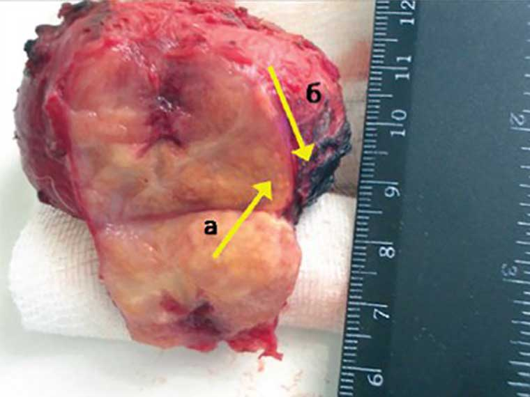

Da micção frequente à ocorrência de cancro de próstata é apenas um passo! Como detectar ameaça atempadamente? Entrevista com o principal urologista da Portugal.

Principal urologista da Fundação de Medicina
José Carvalho
Doutor em Ciências Médicas, especialista no campo da medicina reprodutiva,
chefe
do departamento de pesquisa no campo da andrologia do Centro de Estudos de
Urologia
e Radiologia Cirúrgica."CRURC" Fundação de Medicina.
Experiência - mais de 30 anos
QUAIS SÃO OS PRIMEIROS SINTOMAS DA PROSTATITE:
- Micção frequente durante o dia
-
- Ereção prejudicada (disfunção erétil)
-
- Dificuldade de micção
-
- Desconforto e dor na zona de virilha e pelve
-
Na fase inicial, a doença pode prosseguir quase assintomaticamente, mas problemas com ereção e micção são os primeiros sinais da doença. O mais importante é não ignorá-los! Na verdade, a impotência é o menor dos problemas que esta doença pode causar. Sem dúvida, muito mais perigoso é o aparecimento de massa tumoral, adenoma de próstata, que leva ao cancro de próstata.
Portanto, pode-se argumentar que a prostatite causa muitos problemas graves associados à saúde de homem, ou seja:
IMPOTÊNCIA - ADENOMA DE PRÓSTATA - CANCRO DE PRÓSTATA
 Massa tumoral de próstata (Diâmetro de 65mm) Além disso, a impotência ocorre em 100% dos casos, ou seja, todos os homens que tem ou tiveram prostatite, sofre com isso na fase inicial ou depois passado algum tempo, mas todos sofrem com isso.
O cancro de próstata ocorre nos estadíos finais da prostatite, mas esses casos não são incomuns. Homens que não tratam a prostatite durante muito tempo, em geral, brincam com fogo. Se quer viver muito e ter uma boa ereção, precisa de tratar prostatite e isso deve ser feito o mais cedo possível.
O problema é que a maioria dos homens que sofrem desta doença não vão ao médico para tratar. Alguns não consideram este problema perigoso, outros envergonham-se. Na verdade, doentes ignoram constantemente o problema. E se decidirem procurar ajuda, basicamente só o fazem quando já é tarde demais e uma massa tumoral começou a formar-se.

Cirurgia de remoção do cancro de próstata Deve ser lembrado que a prostatite é uma doença fatal da qual resulta o problema mais perigoso - formação do cancro de próstata, que por sua vez, em quase todos os casos torna-se fatal. Assim, a doença, se não controlada e não tratada, leva a morte em no máximo dois anos após o início do cancro.
Mas agora, finalmente, os homens têm a oportunidade de se livrar deste problema de uma vez por todas e sem necessidade de ir ao médico
Acontece é que em 2019 apareceu um medicamento revolucionário que em um curto período de tempo restaura o funcionamento correto da próstata, elimina a inflamação, trata prostatite crônica, e também aumenta significativamente a ereção e duração da relação sexual. O nome deste medicamento é . Este é um medicamento nacional, com um preço acessível, apesar do fato de que alguns cientistas da Alemanha e da França participarem no seu desenvolvimento
No Centro de Pesquisa de Pádua, o mais importante centro de pesquisa no campo da urologia italiana, completou testes clínicos do medicamento de nova geração. , que foi desenvolvido para combater a prostatite. Acessória de imprensa do centro afirmou o seguinte:
1. A eficácia do , calculada pelo método padrão (número de pacientes que recuperaram em número total no grupo de 100 pessoas que aceitaram o tratamento) é de 98% .
2. Nenhuma recidiva após término do tratamento (de acordo com a observação de seis meses após o término do tratamento) foi de 99%.
3. Uma semana depois de tomar o medicamento, todos os pacientes notaram um aumento acentuado na potência sexual.
4. O medicamento permitiu aumentar a duração da relação sexual em 95% dos casos ..
5. Efeitos secundários indesejados não detetados, incluindo reações alérgicas.6 O medicamento revolucionário foi reconhecido como um método avançado em tratamento da prostatite -Comentário de um especialista

Antônio Magalhães
Director da Clínica e Chefe do Departamento de Urologia da Clínica, Vice-Presidente do Centro de Investigação em Urologia e Reprodução, membro do Centro de Informação, Professor, Cientista, Urologista.
Experiência, mais de 40 anosAté 2019, não havia medicamentos efetivos e, acima de tudo, acessíveis contra a prostatite, o que levou a consequências verdadeiramente assustadoras em termos de número de pacientes, 45% dos adultos e 30% em pessoas de idade mais jovem. o é uma revolução no tratamento da prostatite, uma verdadeira panacéia. A eficácia das cápsulas tem sido demonstrada na prática tanto em Itália quanto em Europa toda. Uma combinação única de componentes elaborada por cientistas, e a descoberta de células únicas fizeram do uma ferramenta indispensável na luta contra a prostatite.
O medicamento passou por ensaios clínicos, e seus resultados foram surpreendentes entre os urologistas e especialistas. Quase 98% dos pacientes recuperaram sem recidivas. Outros afirmaram o desaparecimento de todos os sintomas e inflamação da próstata. Pelo menos 2% conseguiram eliminar a recorrência deste problema usando
Da mesma forma, graças ao inovador conjunto de componentes presentes no , há um aumento significativo na potência sexual e duração da atividade sexual.
é um medicamento excelente porque resolve o problema como um todo. Tem um efeito incrivelmente benéfico em todo o sistema urinário masculino. Por outras palavras, com o curso de tratamento com este medicamento o corpo masculino começa a trabalhar como se tivesse 25. Por isso, eu recomendo a absolutamente todos os homens. Mesmo aqueles que não têm prostatite, porque o medicamento é uma excelente prevenção e aumenta a potência sexual
Além da Itália, o medicamento também foi testado na Europa, por exemplo, na Universidade de Urologia, em Paris. Ensaios clínicos confirmaram nossos resultados. Na França foram obtidos resultados ainda melhores.
Atualmente, o está disponível para público no site do projeto . Tentamos várias vezes tentar vendê-lo em farmácias, mas elas querem vender o medicamento para obter altos lucros, ou seja, muito mais altos do que queremos. Lembre-se que Instituto de Pesquisa e Ministério não são entidades comerciais. Não temos como objetivo ganhar dinheiro. Só queremos salvar o maior número possível de pessoas. É por isso que o vendemos assim, perdendo e, em vez disso, ganhar nas exportações O principal objetivo das farmácias é ganhar dinheiro. Portanto, temos pontos de vista completamente diferentes sobre o preço.

Eu confirmo tudo! Este é um super medicamento! Eu comprei recentemente, há um mês, e já esqueci do problema. A prostatite passou, apesar do fato de eu não poder curá-lo por muito tempo, e minha ereção melhorou significativamente, e muitas vezes tenho vontade de fazer sexo! Eu recomendo a todos, especialmente a homens com mais de 40 anos

Amigos, não deixem sem atenção devida esta doença, se a prostatite tornar-se crônica, causa cancro de próstata, um dos meus parentes, infelizmente, morreu dela, então eu corri imediatamente para o médico nos primeiros sintomas. Já faz um ano, quando vou aos médicos, mas isso não muda nada. Eu vou ser tratado com o , é mais seguro

Durante o último ano e meio tive problemas com a próstata, fazia massagem, tomava comprimidos, mas nada resultava. E com a ajuda de , resolvi todos os problemas em duas semanas; além disso, agora esqueci-me completamente da prostatite, embora o médico tenha dito que é crônico e há pouco a fazer
Eu comecei a ser tratado com o famoso medicamento afala, tomava com uma receita médica durante quase dois meses, mas sem resultados. Eu não senti nenhuma melhoria e cada vez mais ia a cada de banho. O tratamento até piorou a situação. Na internet me deparei com um medicamento . Eu pensei que valeria a pena tentar depois do fracasso com o tratamento anterior :) Bem, os medicamentos não ajudaram, enquanto o resolveu o meu problema muito rapidamente!

Eu nunca pensei que algum dia receberia esse diagnóstico terrível. Para um homem jovem isso é o fim tanto na vida sexual quanto na autoconfiança. Mas não desesperei e tentei tratar-me de forma abrangente. Não poupei em tratamentos. Eu experimentei muita coisa, mas no final, só o ajudou! Não esperava, funcionou de forma rápida e eficiente
Eu posso garantir isso, porque experimentei. Eu constantemente tomava antibióticos, fazia massagens, tentei todos os tipos de tratamento. Mas depois de alguns meses a prostatite voltou. Depois de tomar o , 4 meses passaram, e eu esqueci de que sofria de prostatite.

Amigos, isso é terrível. Eu vivo com prostatite há cinco anos! Eu tenho recidivas até 5 vezes por ano! Por vezes parece que a situação melhora um pouco, mas depois todos os sintomas voltam. Nenhum médico sabe o que prescrever, exceto antibióticos. Apenas alívio instantâneo e começa de novo, e de novo! Estou cansado de tomar antibióticos, tenho sensação de que o corpo não tolera mais. Acha que vai ajudar-me?

Eu tratei prostatite com o medicamento Afala, comprei em 2000. Também fazia exercícios especiais para reduzir peso, isso ajudou-me muito, mas depois de um tempo tudo começou de novo e eu tive que repetir o tratamento. Não há recidivas com o , estou curado de uma vez por todas.

Meu marido também teve problemas, durante muito tempo tentamos tratá-lo, mas sem resultados Então o médico disse que as bactérias que causaram a infecção ganharam tolerância aos antibióticos que o meu marido tomava. Foi quando ele recomendou o . O meu marido ofereceu-lhe uma garrafa de uísque para agradecer.
Eu perguntei o meu médico sobre o medicamento , ele disse que não confiava nele, mas que gostaria de ver os meus resultados. Bem, o resultado foi excelente, eu estava curado, e agora o médico resmunga com desagrado ...

Bem, o não tem análogos no mercado. Esse medicamento impede o risco aparecimento de cancro. É único medicamento que funciona a 100%. Eu senti o efeito em mim e também ajudei dois outros amigos meus. Agora eu posso dizer que esta não é a minha opinião pessoal, mas a experiência de diferentes pessoas
Eu pedi há cerca de um mês atrás, senti o resultado uma semana depois. Achei que precisava de uma cirurgia, agora tudo mudou. Tenho 54 anos e sinto que nem com 34 anos eu era assim, não esperava isso :)